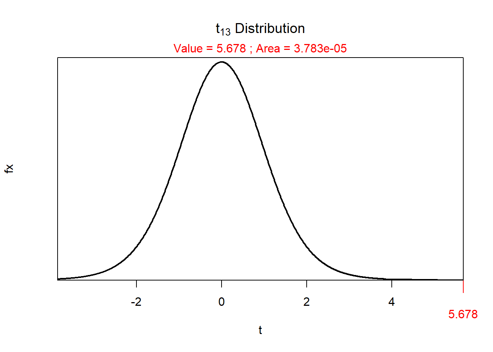

As part of the assignment template, the following two lines were run before the code run in the sections below.
> library(NCStats)
> library(ggplot2)> nums <- c(7,9,4,12,15,13)
> mean(nums)[1] 10> sd(nums)[1] 4.09878> distrib(5.678,distrib="t",df=13,lower.tail=FALSE)
Natural variability describes the fact that individuals in a population are not identical. Sampling variability describes the fact that results (e.g., mean) differ among multiple samples from the same population. The key difference is that natural variability is about individuals varying, whereas sampling variability is about statistics varying.